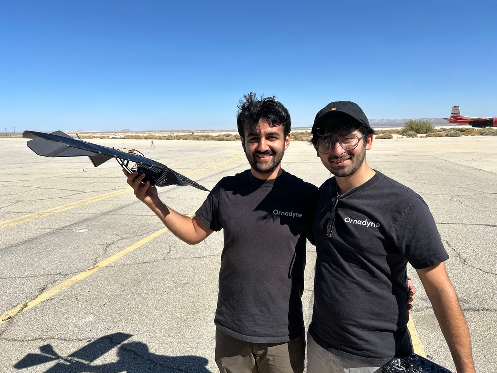

A drone that flaps like a bird slipped past rival detection gear at an Air Force test
The Defense Contract Management Agency said Ornadyne, a U.S. drone maker, flew its O1 ornithopter at the "Game of Drones" event at Edwards Air Force Base, California, Sept. 14-18. The O1 stays airborne on flapping, semi-rigid wings instead of propellers. Chief executive Geourg Kivijian said sensors brought by other companies at the event could not pick the drone out, and that it registered as a bird. Chief technology officer Armen Arakelyan said it was the first time the company could test that against detection systems run by others, and that the flapping wings also make it quieter. Kivijian said his company is the only U.S. manufacturer building mechanical birds for reconnaissance. DCMA's Blue List team ran the event with the Air Force 412th Test Wing's Experimental Test Force and the Griffiss Institute, to put vendors and warfighters in one test range and see how drone capabilities fare against each other.